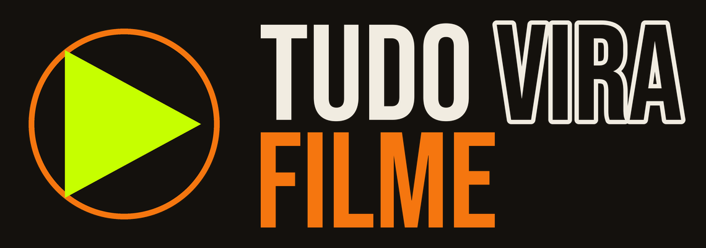
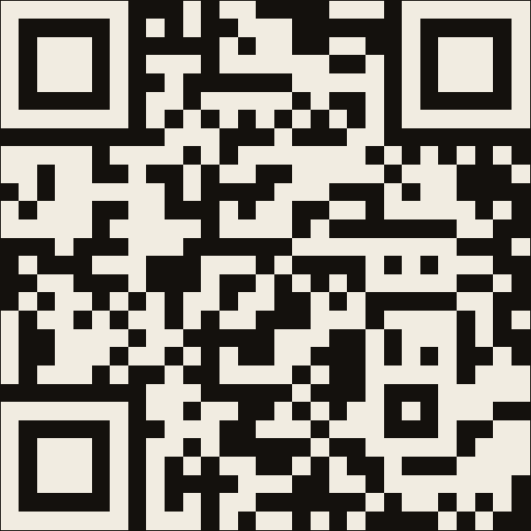
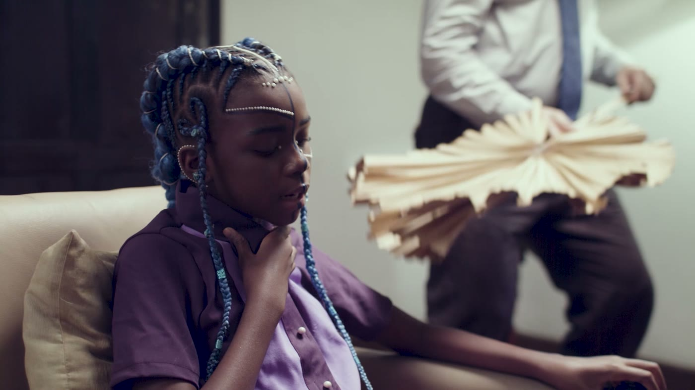
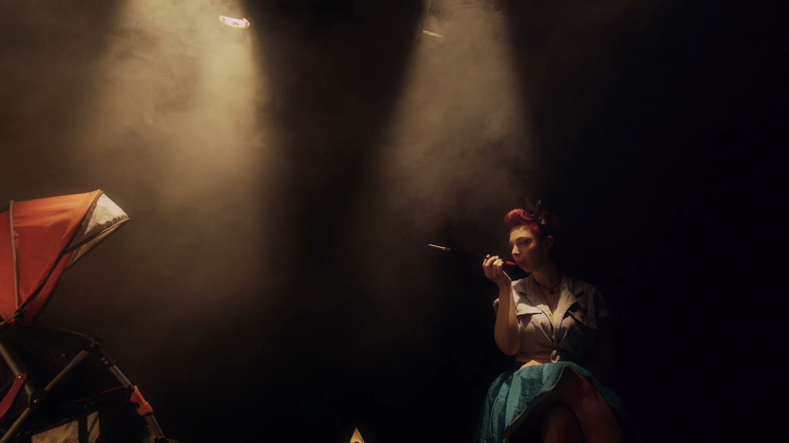
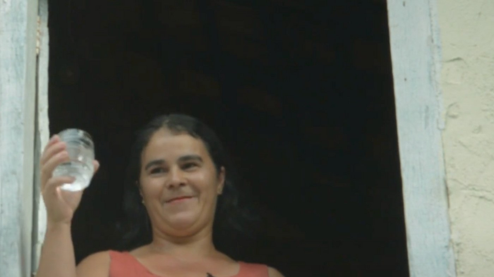
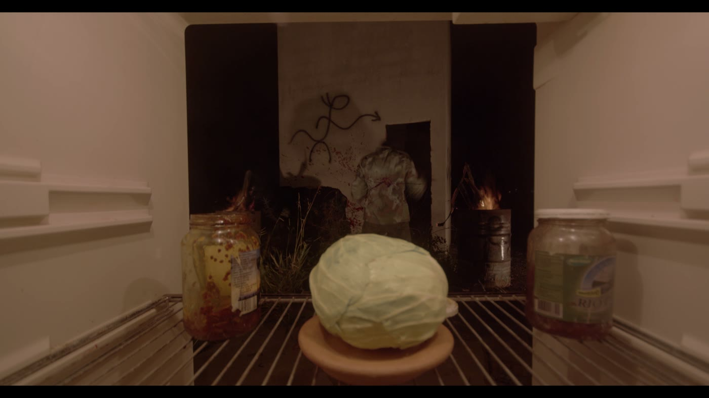
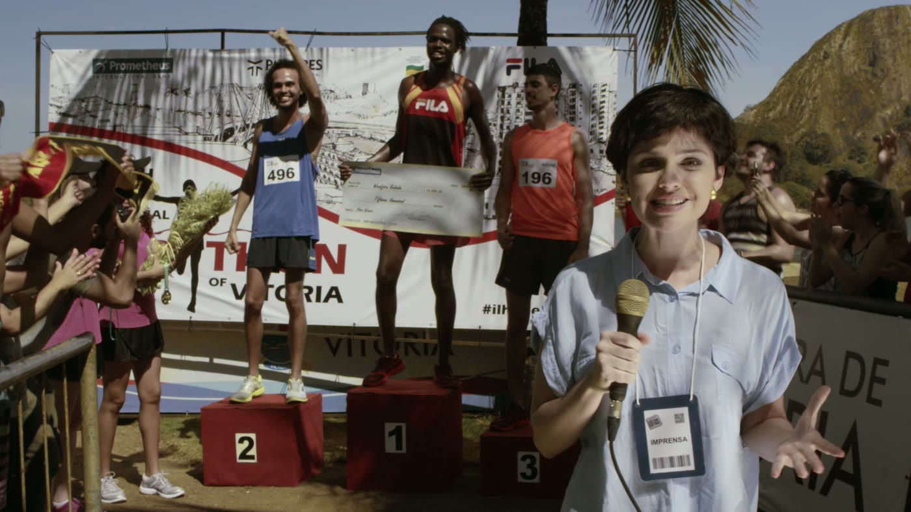

QUEM SOMOS
E O QUE A
GENTE VÊ
Quatro meses. Cinco linguagens. Um filme que ainda não existe.
SEU NOME,
E UMA COISA
QUE VOCÊ VIU
Um filme, uma série ou um vídeo que te marcou. Não precisa dizer por quê ainda.
NÃO É SÓ APERTAR REC
AUTONOMIA
Decidir, errar, refazer e sustentar a própria escolha sem depender de mim.
COLABORAÇÃO
E LIDERANÇA
Liderar e ser liderado. Todo mundo passa por funções de comando e de apoio.
SENSO
CRÍTICO
Entender que todo enquadramento é uma escolha, e toda escolha exclui alguma coisa.
IDENTIDADE
E VOZ
Descobrir que você tem algo a dizer, e de onde você fala.
ONDE A GENTE VAI CHEGAR
Perder o medo do equipamento e aprender a ler imagem.
Experimentar as cinco linguagens e escolher a sua.
Sua produtora assume o projeto. Eu só entro quando sou chamado.
Vocês finalizam os filmes e produzem a mostra. Eu viro plateia.
A cada módulo eu saio mais de cena, e vocês assumem mais. No fim, o filme é de vocês.
UMA PRODUTORA, CINCO FILMES
Vocês não são cinco alunos soltos fazendo trabalho de escola. São uma produtora só, e ela vai assinar cinco curtas: um de cada um de vocês.
O filme é seu, na linguagem que você escolher no Encontro 16.
Fotografia, som, produção, arte. Função diferente em cada filme.
O nome da produtora vocês inventam juntos no Encontro 8.
TRÊS SÁBADOS DE SET
Aula de 1h30 não grava filme. As diárias acontecem em três sábados, das 9h às 13h, aqui na Ribalta e em locação externa.
14/11
Dois filmes
21/11
Dois filmes
28/11
O quinto filme, e as retomadas
O filme do colega depende de você aparecer. Cinco pessoas é a equipe inteira, não tem reserva no banco.
CRIE SUA FICHA

Nome, uma frase sobre você agora, a cor do seu crachá, e uma foto que te represente.
A foto vai ficar visível pra turma toda, e a gente vai voltar nela daqui a pouco. Escolhe com carinho.
CINCO
CAMINHOS
Vou apresentar cinco jeitos diferentes de contar história, com trabalho meu de verdade. Cada um deles pode ser o seu. No fim, vocês pontuam.
FICÇÃO
01 / 05
Inventar um mundo inteiro e convencer todo mundo de que ele existe. Uma entidade de 11 mil anos dentro do corpo de uma criança, filmada aqui do lado.
VOCÊ CONSTRÓI TUDO,
E RESPONDE POR TUDO
PERSONAGEM
Alguém que quer uma coisa e tem algo no caminho. Sem isso, não existe cena.
DECUPAGEM
Quebrar a cena em planos antes de filmar. É aí que a direção acontece de verdade.
DIREÇÃO DE ATOR
Conduzir uma pessoa a fazer o que a cena precisa, sem mandar ela "atuar".
VIDEOCLIPE
02 / 05
Aqui a música manda e a imagem obedece. É o formato mais livre de todos: não precisa fazer sentido, precisa fazer sentir.
A ESTRUTURA JÁ EXISTE,
VOCÊ PREENCHE
SINCRONIA
Cortar no tempo da música, e saber quando sair dele de propósito.
UMA IDEIA SÓ
Clipe bom costuma ter uma ideia visual única, levada até o fim sem medo.
PERFORMANCE
A câmera está ali pra fazer alguém parecer maior do que é na vida.
DOCUMENTÁRIO
03 / 05
Não inventa nada, e por isso é o mais difícil. Você aponta a câmera pra vida de alguém, e passa a ser responsável por como essa pessoa vai ser vista.
VOCÊ NÃO CONTROLA,
VOCÊ NEGOCIA
RECORTE
O real é infinito. Documentário é o que você escolhe deixar de fora.
ESCUTA
A melhor cena quase sempre vem depois que a pessoa esquece a câmera.
ÉTICA
Quem você filmou continua existindo depois que o filme acaba.
VIDEOARTE
04 / 05
Sem personagem, sem enredo, sem explicação. Só corpo, imagem e tempo. É o mais estranho da lista, e é onde muita gente descobre que gosta.
A IMAGEM SAI
DA SALA ESCURA
DURAÇÃO
Sem começo, meio e fim obrigatórios. Costuma viver em loop.
CORPO E ESPAÇO
O corpo vira material, e o lugar onde a obra é exibida faz parte dela.
SEM CONTRATO
Ninguém precisa assistir do início ao fim. A pessoa atravessa a obra.
EXPERIMENTAL
05 / 05
Quebrar a regra de propósito, sabendo qual regra você está quebrando. Foi por aqui que meu trabalho chegou em Cusco e em Nova York.
QUEBRAR A REGRA,
DEPOIS DE ENTENDER
FORMA É CONTEÚDO
Como você filma é o que o filme diz. Não dá pra separar as duas coisas.
REGRA CONSCIENTE
Quebrar sem saber é erro. Quebrar sabendo qual regra é escolha.
RITMO E REPETIÇÃO
O sentido nasce do acúmulo e da repetição, não do enredo.
DÊ SUA NOTA
No app, dê de 0 a 10 pra cada uma das cinco linguagens. Não é sobre qual é melhor, é sobre o quanto aquilo te deu vontade de fazer.
Guardem essas notas. A gente vai refazer isso mais pra frente no curso, e comparar com o que vocês acabaram de responder.
SUA FICHA
NO TELÃO
Cada um sobe a própria ficha aqui e responde três coisas, em dois minutos:
- 01Por que essa foto, e não outra?
- 02Qual linguagem levou sua nota mais alta?
- 03Qual levou a mais baixa, e por quê?
Quem escuta não julga e não debate. Só escuta.
O QUE NÃO ESTÁ EM DISCUSSÃO
- 01Respeito à diferença: sem racismo, machismo, homofobia ou qualquer discriminação.
- 02Zero agressão física, verbal ou moral, incluindo diárias externas e o dia da mostra.
- 03Consentimento em tudo que envolve o corpo ou a imagem de um colega.
- 04Zero assédio, de qualquer tipo, com qualquer pessoa da produção.
- 05Nada de álcool ou outra substância no espaço da oficina ou em atividade da turma.
Isso é o piso, não a pauta. O resto a gente escreve junto, agora.
O QUE MAIS ENTRA NO ACORDO
- 01O que vocês não aguentam numa sala de aula, e que dá pra evitar aqui desde já?
- 02O que precisa existir aqui pra vocês topar errar na frente dos outros?
- 03Quando alguém atrasar ou faltar, o que é justo a gente combinar?
- 04Se um colega magoar o outro sem querer, como a gente resolve antes de virar mágoa guardada?
- 05A gente vai filmar na rua, na casa dos outros. O que muda no comportamento da turma nesses dias?
EU VIM PRA
ESSA OFICINA
PORQUE...
Você entra, senta, diz seu nome e completa a frase. Ninguém vê a resposta de ninguém. Guarda essa resposta na memória: a gente volta nela.
ENQUADRAR
É ESCOLHER
Vocês escolheram uma foto pra representar vocês. Escolheram uma nota pra cada linguagem. Escolheram o que ia entrar no acordo. Isso é montagem, e vocês já estão fazendo.